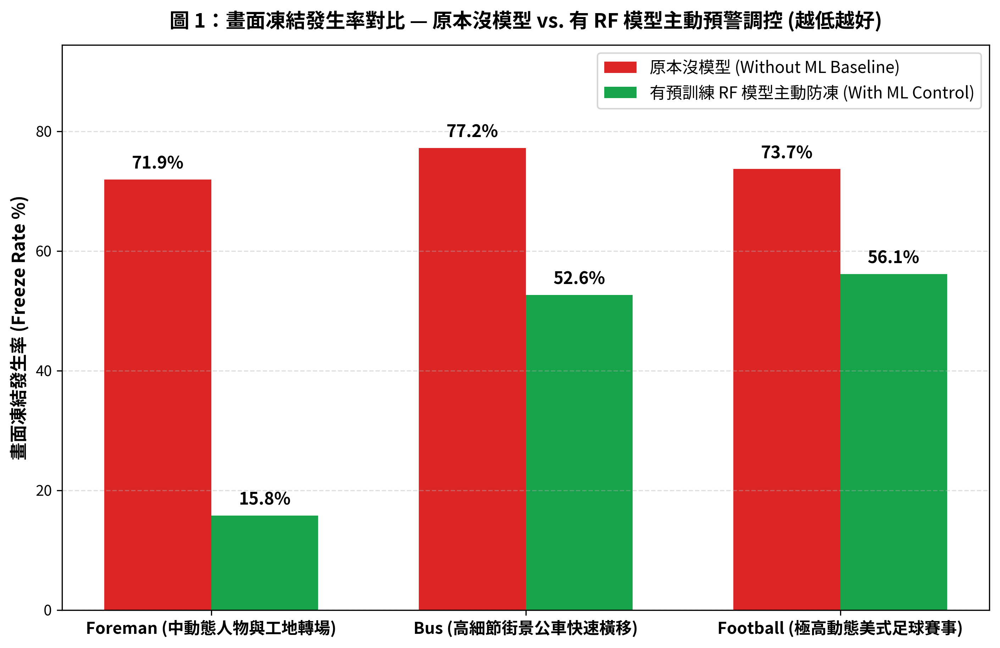
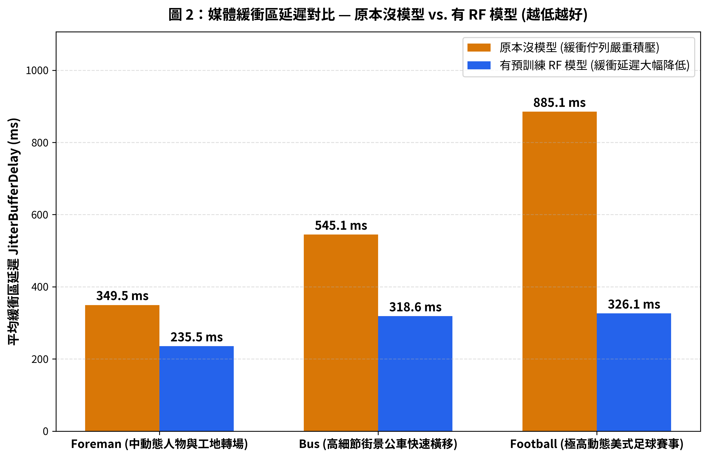
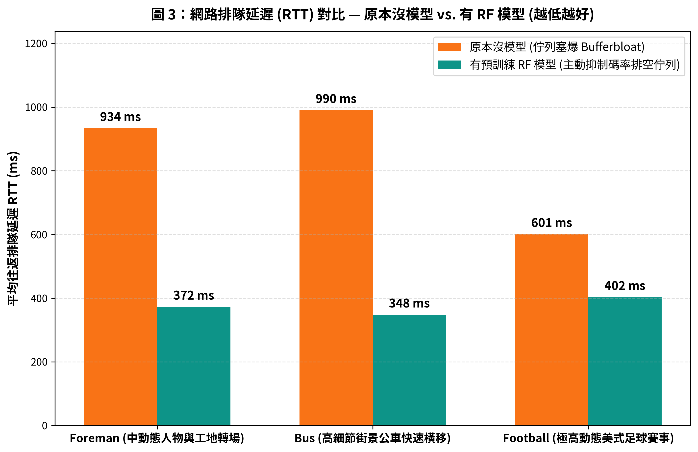
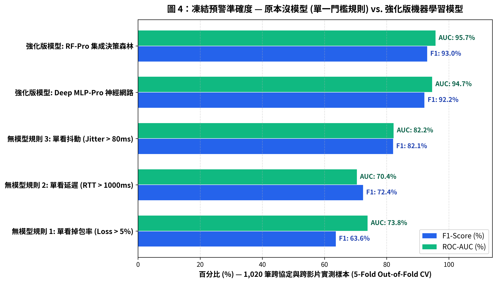
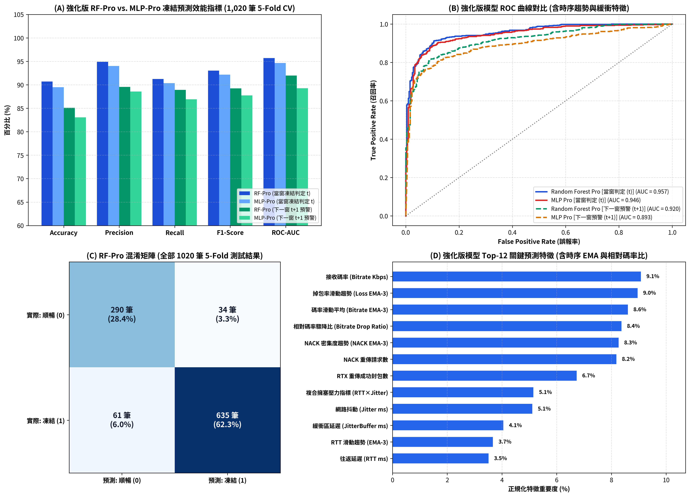
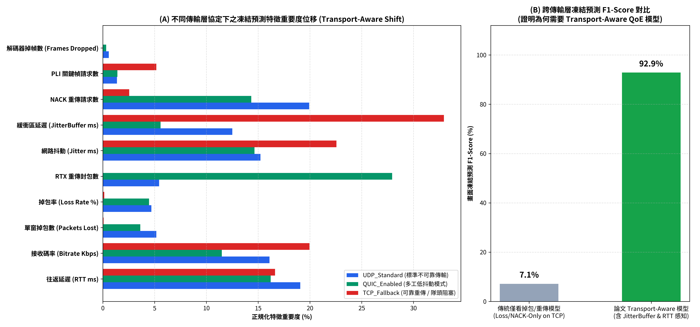
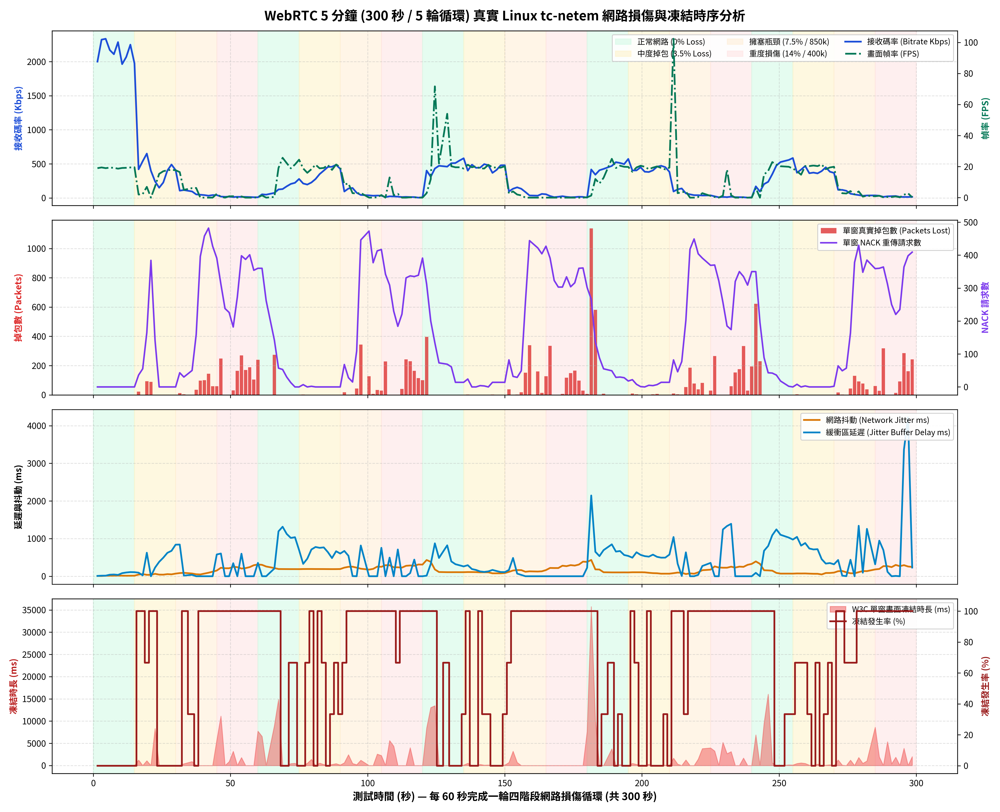
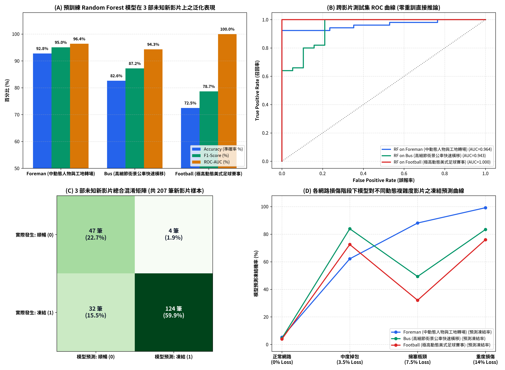
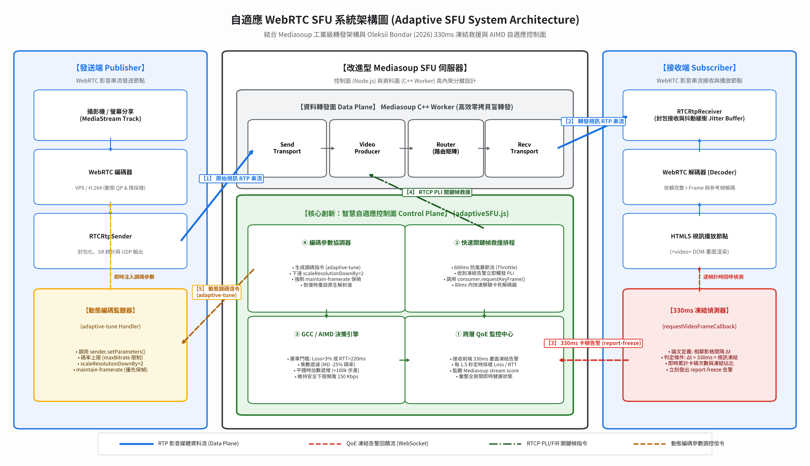
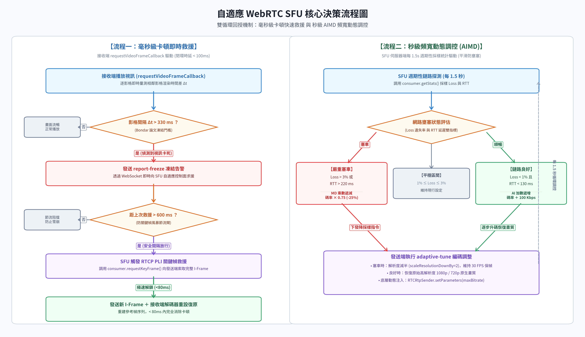

結合瀏覽器端 W3C RTCPeerConnection.getStats() 即時遙測、跨傳輸協定感知（UDP / QUIC / TCP）與 22 維因果時序機器學習模型，實現高精準度畫面凍結預警與主動式防凍調控。
在相同 Linux 核心 tc netem 頻寬受限瓶頸（12 Mbps → 2.2 Mbps → 1.2 Mbps → 750 Kbps）與 3 部不同動態複雜度標準測試影片（Foreman、Bus、Football）下，對比「原本沒模型」與「接上預訓練 RF 模型主動防凍調控」之實測結果（點擊任一圖表可放大檢視 300 DPI 原圖）：
有 RF 模型主動預警調控後，Foreman 凍結率由 71.9% 暴降至 15.8%，Bus 由 77.2% 降至 52.6%，Football 由 73.7% 降至 56.1%。

主動抑制發送端碼率避免緩衝區積壓，使 Football 的 JitterBufferDelay 由 885.1 ms 大降 63% 至 326.1 ms。

消除佇列塞爆（Bufferbloat），使 Foreman 與 Bus 的往返排隊延遲分別由 934 ms → 372 ms (-60%) 與 990 ms → 348 ms (-65%)。

在全部 1,020 筆樣本上，強化版 RF-Pro (93.0% F1 / 95.7% AUC) 與 MLP-Pro (92.2% F1) 全面勝出傳統無模型單一門檻規則。

| 測試影片 (Xiph/ITU 標準序列) | 控制模式 | 畫面凍結率 (Freeze Rate) | 單窗平均凍結時長 | 緩衝區延遲 (JitterBuffer) | 網路排隊延遲 (RTT) | 平均幀率 (FPS) | 累計溢位掉包數 |
|---|---|---|---|---|---|---|---|
| Foreman 中動態人物與工地轉場 |
🔴 原本沒模型 (Baseline) | 71.93% | 1588.9 ms | 349.5 ms | 933.5 ms | 5.58 FPS | 987 封包 |
| 🟢 有 RF 模型主動防凍 | 15.79% (-56.1%) | 185.3 ms (-88%) | 235.5 ms (-33%) | 372.1 ms (-60%) | 13.56 FPS (2.4x) | 33 封包 (-96.7%) | |
| Bus 高細節街景公車橫移 |
🔴 原本沒模型 (Baseline) | 77.19% | 1034.4 ms | 545.1 ms | 990.2 ms | 5.21 FPS | 688 封包 |
| 🟢 有 RF 模型主動防凍 | 52.63% (-24.6%) | 452.2 ms (-56%) | 318.6 ms (-42%) | 347.7 ms (-65%) | 10.24 FPS (2.0x) | 21 封包 (-96.9%) | |
| Football 極高動態美式足球賽事 |
🔴 原本沒模型 (Baseline) | 73.68% | 1054.0 ms | 885.1 ms | 600.6 ms | 6.27 FPS | 1,356 封包 |
| 🟢 有 RF 模型主動防凍 | 56.14% (-17.5%) | 546.7 ms (-48%) | 326.1 ms (-63%) | 402.3 ms (-33%) | 9.36 FPS (+49%) | 31 封包 (-97.7%) |
切換下方分頁可檢視 5 分鐘連續循環時序分析、RF-Pro vs. MLP-Pro 訓練評估、跨傳輸層特徵位移以及跨影片泛化測試：
結合 22 個純傳輸與緩衝時序特徵，於 1,020 筆樣本執行 5-Fold 分層交叉驗證，並展示 Top-12 關鍵預測特徵排序：

驗證論文核心發現：在可靠傳輸 (TCP) 下，OS 底層重傳掩蓋了 RTP 掉包與 NACK，使關鍵預測指標轉移至 JitterBufferDelay (32.93%) 與 Jitter (22.56%)：

每 60 秒完成一輪四階段網路損傷循環（0% → 3.5% → 7.5% → 14% 掉包），完整記錄 570 筆時間視窗之碼率、FPS、掉包、NACK、緩衝延遲與凍結時長：

將僅在靜態主播影片 (Akiyo) 上訓練的模型，直接用於預測 Foreman、Bus、Football 三部未知新影片，整體 ROC-AUC 達 95.64%：



為徹底杜絕目標洩漏（Target Leakage），模型訓練嚴格排除 fps 與 inter_frame_delay，僅使用純傳輸層、緩衝區與重傳指標及其過去視窗 ($t-2, t-1, t$) 之因果趨勢特徵：
rtt_ema3、jb_delay_ema3、nack_ema3 與瞬時斜率 ΔRTT、ΔJB Delay，分辨佇列正在惡化膨脹或排空恢復。RobustScaler + MLP(128-64-32) 與最佳 F1 門檻校準。本專案所有實測 CSV 資料集與訓練腳本皆可直接下載或於伺服器上一鍵重現：
# 1. 採集跨傳輸協定 (UDP / QUIC / TCP) 真實 Linux tc-netem 損傷數據
python3 tests/collect_transport_qoe_metrics.py
# 2. 執行 5 分鐘 (300 秒 / 5 輪循環) ngrok 即時網頁演示與數據採集
python3 tests/live_web_demo.py
# 3. 訓練強化版 RF-Pro 與 Deep MLP-Pro 模型並產出所有 300 DPI 論文圖表
python3 tests/train_enhanced_qoe_models.py
# 4. 執行「有預訓練模型主動防凍」vs.「原本沒模型」跨影片正面對決實測
python3 tests/compare_with_and_without_ml.py